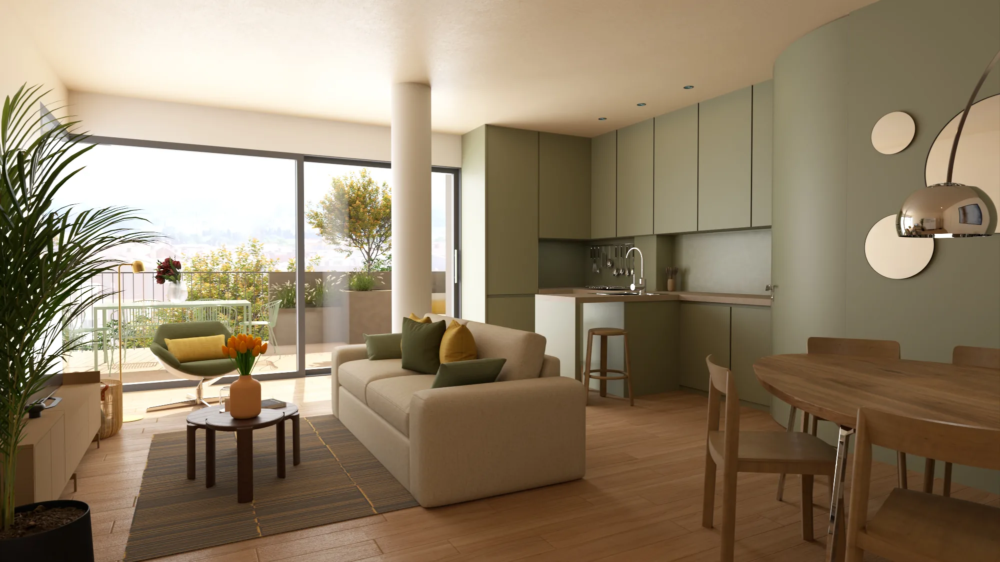

Render e realtà virtuale: vedere un progetto prima di realizzarlo

Da una pianta è difficile capire come apparirà un ambiente una volta realizzato. I render e la realtà virtuale permettono di valutare in anticipo dimensioni, materiali, colori e distribuzione degli spazi, prima di prendere decisioni definitive.
Render, realtà virtuale e video
Sono tre strumenti con funzioni diverse.
Il render è un'immagine tridimensionale che mostra l'aspetto di un ambiente e permette di valutare materiali, colori, arredi e illuminazione.
La realtà virtuale permette di esplorare il progetto attraverso un visore, muovendosi negli ambienti e osservandoli in scala reale.
Il video mostra gli spazi attraverso un percorso prestabilito, accompagnando lo spettatore da un ambiente all'altro. È particolarmente utile per presentare e condividere un progetto a distanza.
Il render durante la progettazione
Utilizzo i render in diverse fasi del progetto, non soltanto per la presentazione finale.
Le immagini tridimensionali permettono di confrontare configurazioni differenti, verificare gli accostamenti tra materiali e colori e valutare il rapporto tra luce naturale e illuminazione artificiale.
In questo modo è possibile modificare le soluzioni quando il progetto è ancora in fase di sviluppo.
La realtà virtuale come verifica
La realtà virtuale viene utilizzata generalmente nelle fasi più avanzate del progetto. Attraverso un visore, il cliente può muoversi all'interno degli ambienti e verificarne direttamente le dimensioni e le proporzioni.
È particolarmente utile per valutare la disposizione degli arredi, le distanze tra gli elementi e la relazione tra i diversi ambienti. Durante la visita è possibile confrontarsi sulle soluzioni proposte e individuare eventuali modifiche.
Scegliere materiali e finiture
Pavimenti, rivestimenti e colori delle pareti possono essere confrontati attraverso diverse visualizzazioni dello stesso ambiente. Questo permette di valutare le combinazioni direttamente nel contesto in cui verranno utilizzate, anziché basarsi soltanto su campioni e cataloghi.
Nella villa di Casalgrande sono previsti cinque bagni. I render sono stati utilizzati per confrontare le configurazioni, i colori e i rivestimenti, facilitando la scelta delle finiture per ciascun ambiente.
Presentare un immobile prima della costruzione
Render e video sono utilizzati anche nel settore immobiliare per presentare edifici e appartamenti prima della loro realizzazione.
A Le Pietre, complesso residenziale in costruzione a Castelfranco Emilia, le immagini tridimensionali mostrano l'aspetto degli edifici e degli interni. I futuri acquirenti possono così conoscere la distribuzione degli ambienti e le caratteristiche degli appartamenti prima dell'acquisto.
La collaborazione con VISION
Per la realizzazione delle visualizzazioni collaboro con VISION, realtà specializzata nella visualizzazione architettonica con sede a Modena.
A partire dagli elaborati progettuali, il lavoro comprende la modellazione tridimensionale, la produzione di render, la realizzazione di ambienti in realtà virtuale e i video.
La collaborazione ha interessato diversi progetti, tra cui Le Pietre, Via Carteria e Casa AD.
Per maggiori informazioni è disponibile la pagina dedicata a render e realtà virtuale.